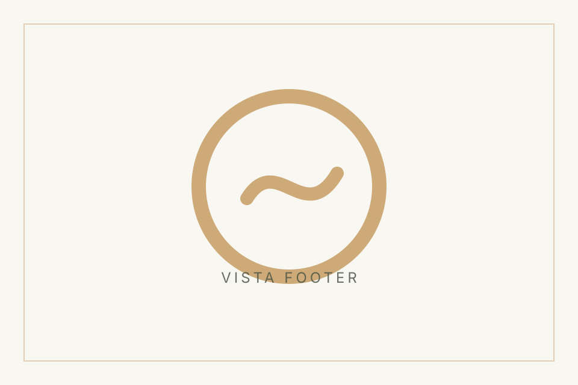
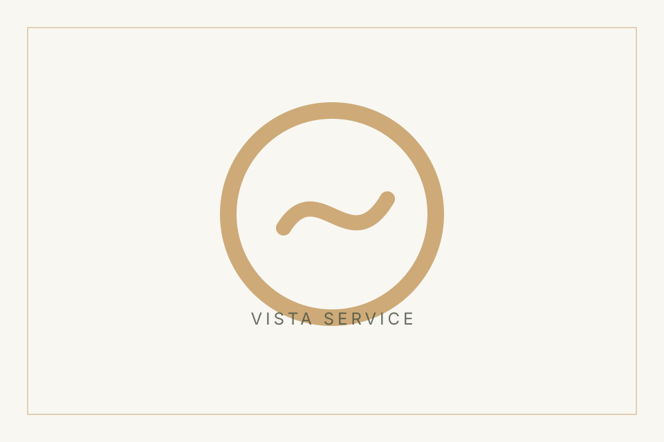
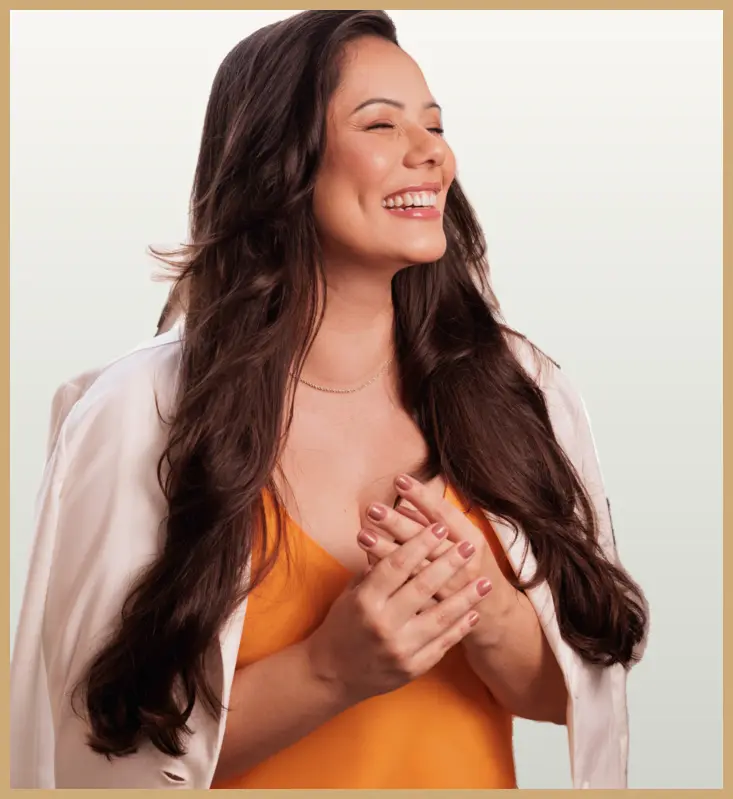
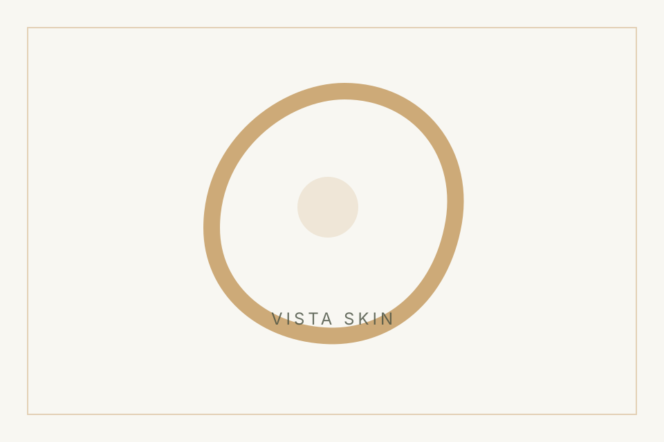
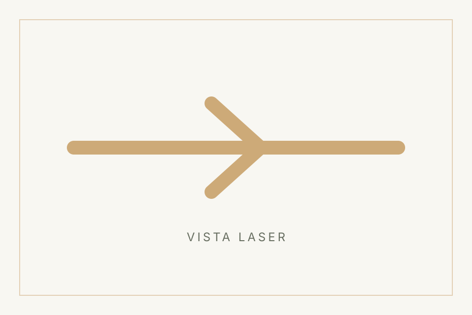
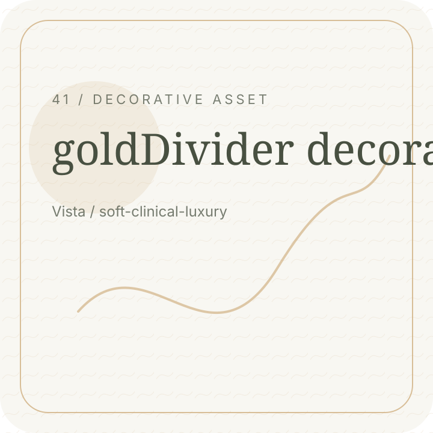
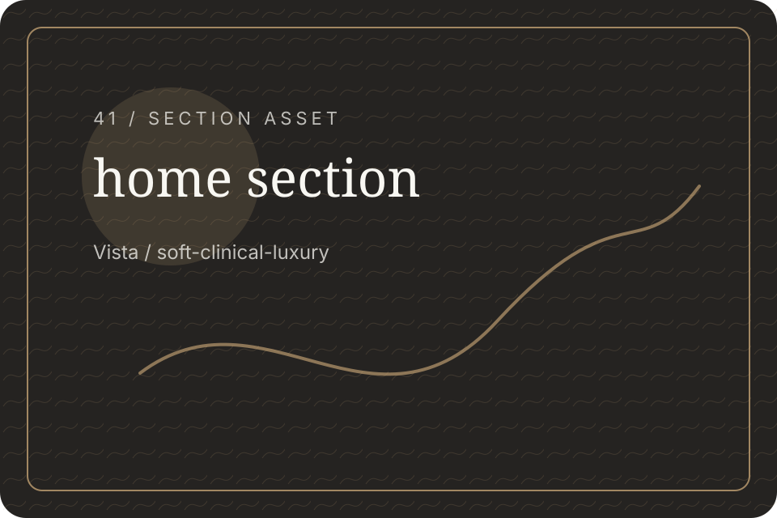
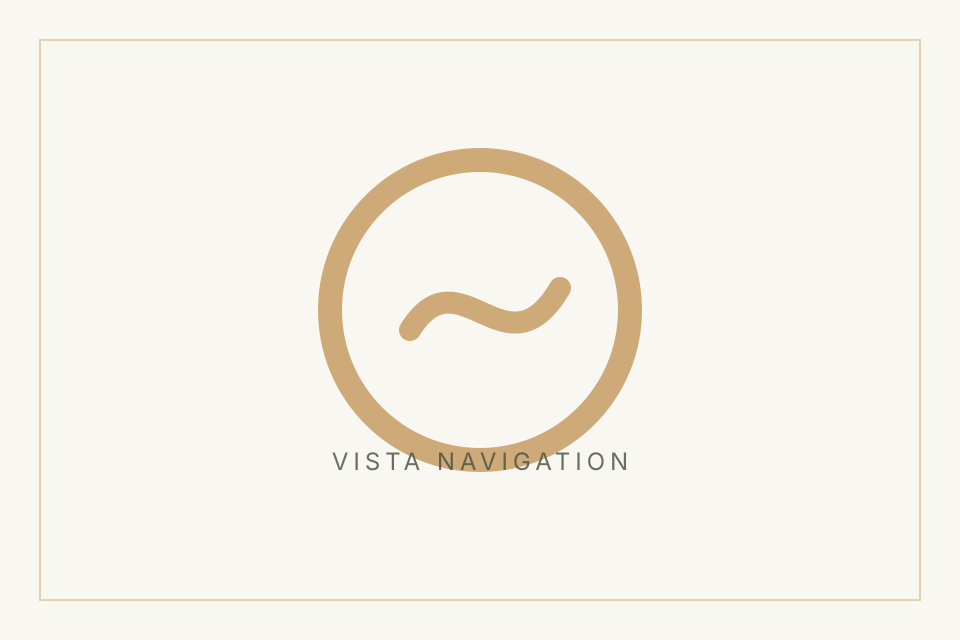

Care
Attentive guidance.
Vista / Hero Promise
A calm, attentive approach shaped around your goals, comfort, and realistic expectations.
Vista / Brand Values
Every decision begins with listening, clarity, safety, and natural-looking confidence.
Attentive guidance.
Clear explanations.
Responsible boundaries.

Natural confidence.

Vista / Meet Franciele
Franciele brings a careful presence to each consultation, shaped by conversation and observation.

Vista / Care Routes
Explore focused guidance for skin, laser, care planning, and responsible expectations.
Attentive guidance.

Skin context.

Suitability first.
Realistic goals.
Vista / Consultation Approach
The first step is a calm conversation about your skin, routine, goals, and comfort level.
Vista / Editorial Break
A refined experience should feel calm, considered, and easy to understand.

Vista / Responsible Results
Results should be discussed responsibly, with attention to individual needs and natural-looking confidence.

Vista / Journal Preview
Read calm, practical guidance before choosing your next step.
Useful route.
Useful route.

Useful route.
Vista / Contact CTA
Send your question or request an evaluation when you feel ready.
Vista / Footer Bridge
Continue through the site or reach out directly for guidance.